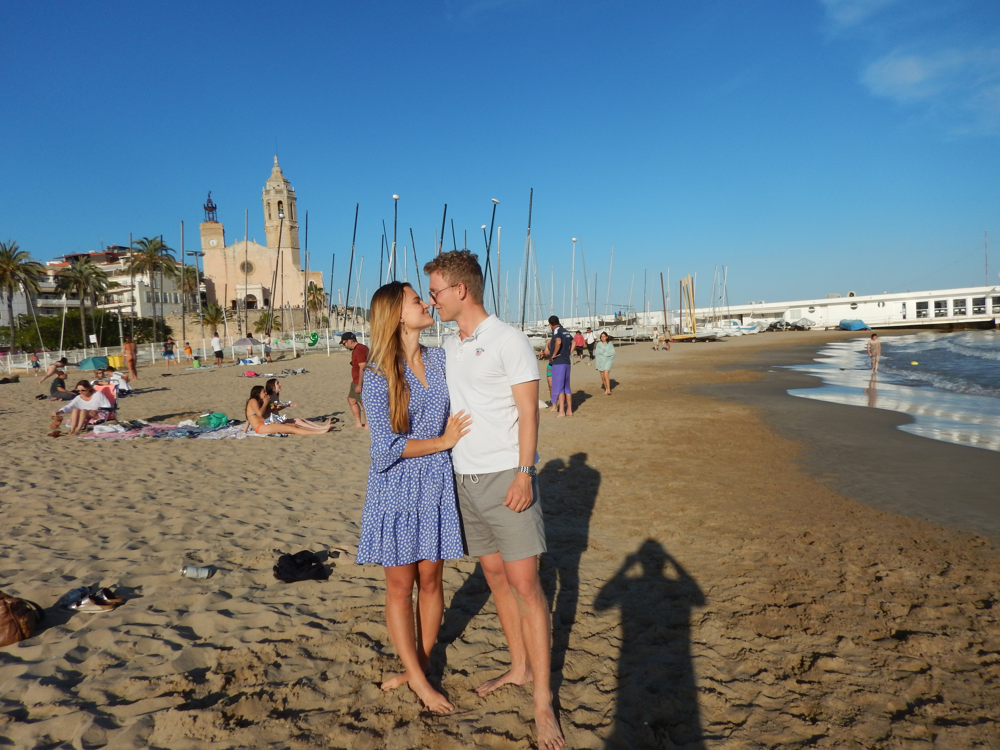
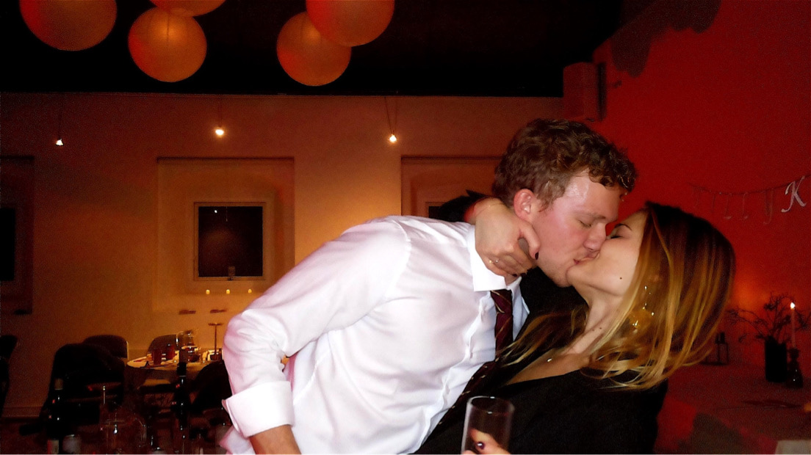
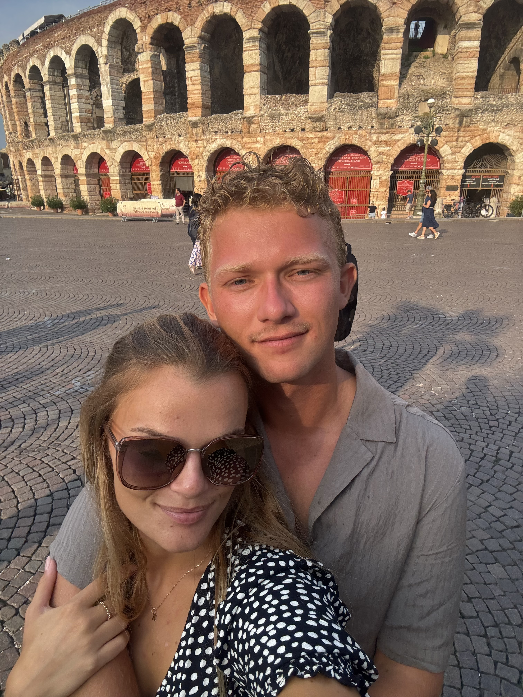
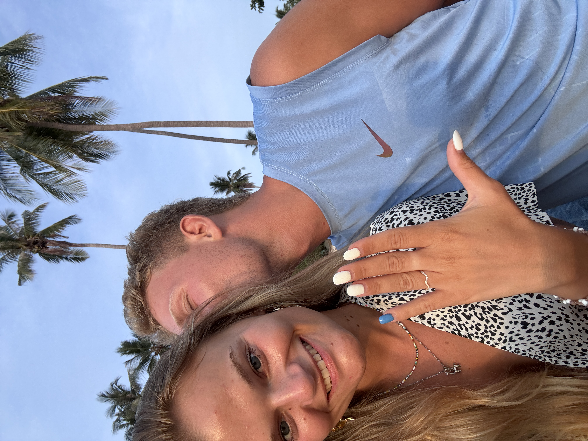
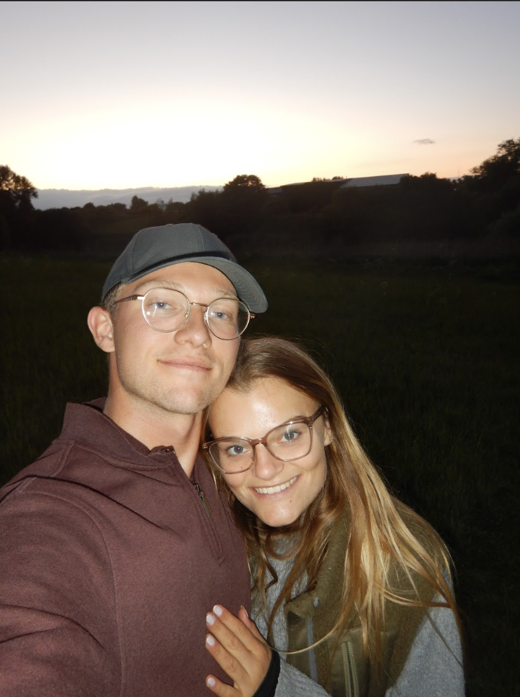

Velkommen
I anledning af vores bryllup har vi på denne side samlet en række praktiske informationer til jer. Vi glæder os til at fejre dagen med jer!
Tid & Sted
Vielse kl 11
Rungsted Kirke
Bryllupsfest kl 16
Charlottenlund Travbane
Traverbanevej 10, 2920 Charlottenlund
Praktisk
S.U.
Svar udbedes venligst senest den 12. april 2027 til Ida på:
idasoelje@gmail.com
Toastmaster
Aftenens toastmaster er Johannes Lindegaard. Eventuelle taler og festlige indslag bedes venligst koordineret med ham i god tid forud for festen.
Han kan kontaktes på: email@email.dk
Gaver
Skulle I ønske at glæde os med en gave, har vi oprettet en ønskeseddel på Ønskeskyen.
Se ønskeseddel herTidsplan
Her kan I se, hvordan dagen kommer til at forløbe:
11:00
Vielse i Rungsted Kirke
12:00
Reception med let forplejning ved kirken
16:00
Bryllupskage & bobler
18:00
Middag med 3-retters menu
23:00
Brudevals og fest
Vores Historie
Et lille udpluk af vores yndlingsminder sammen.








